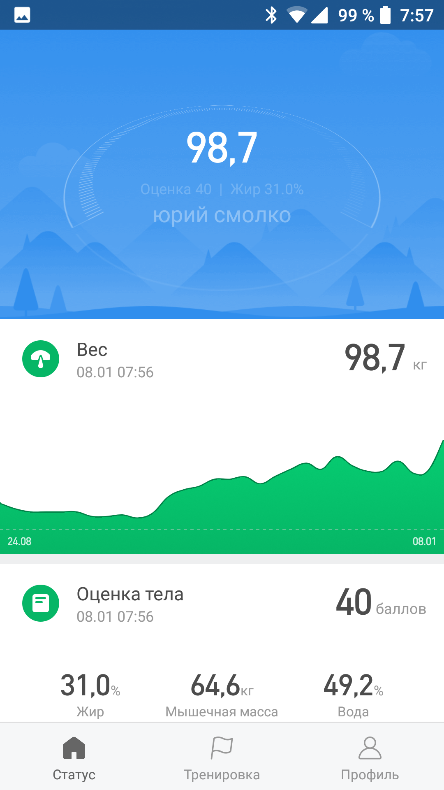
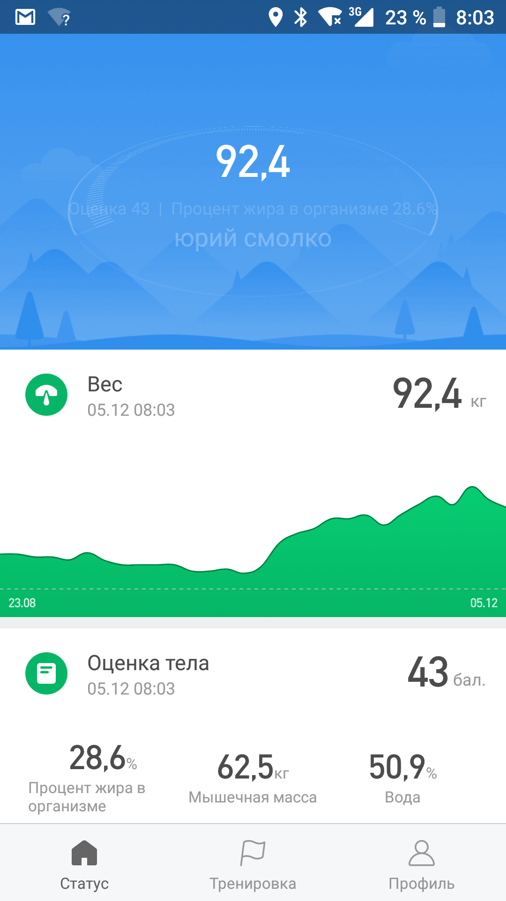
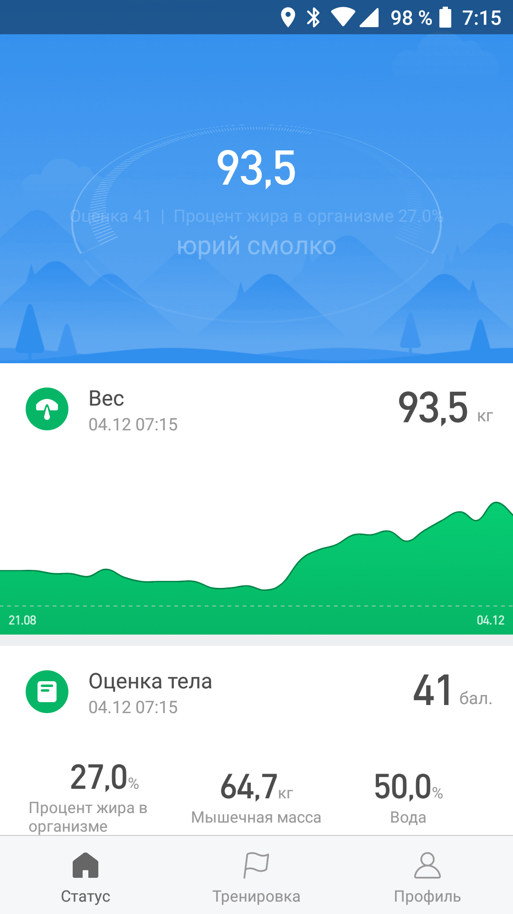
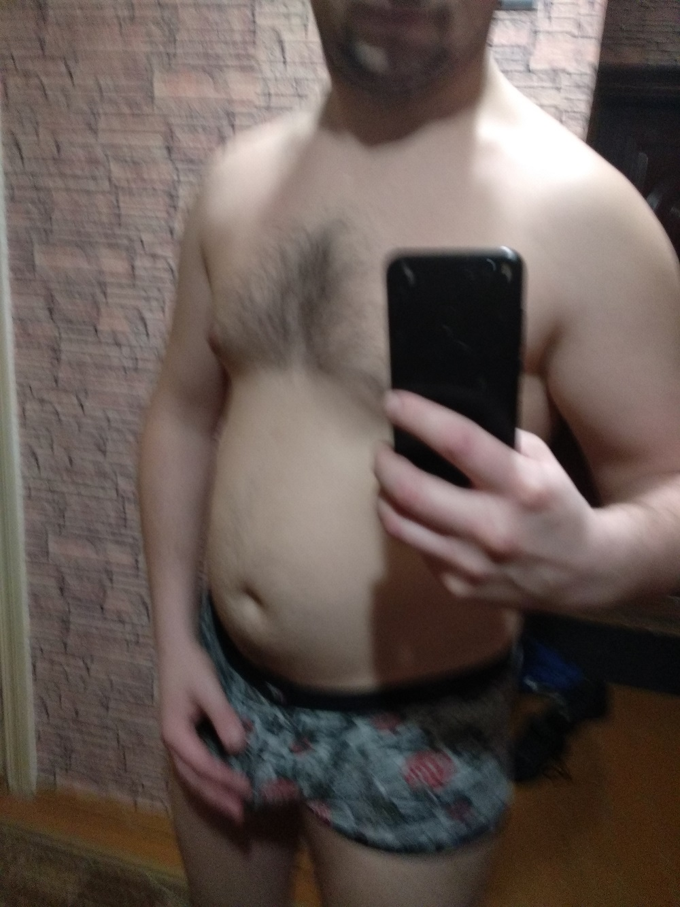
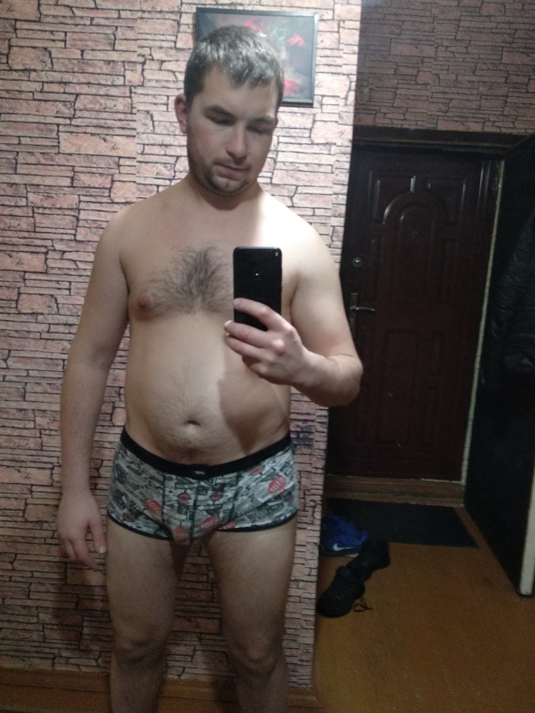
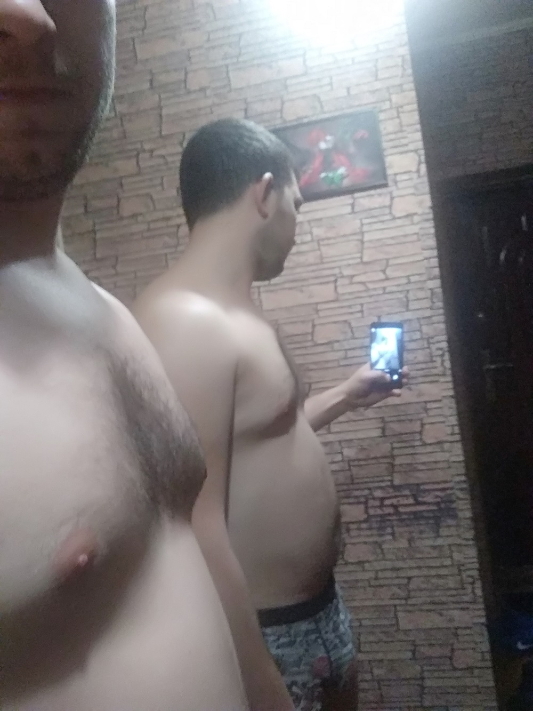
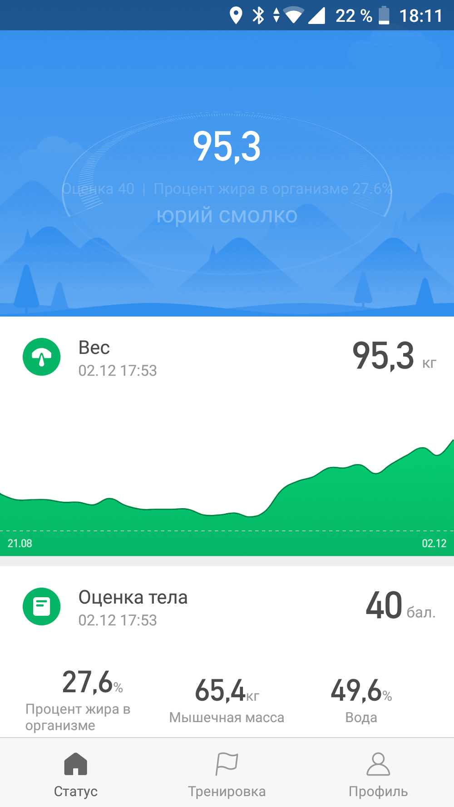

23 января 2019 года
Давно я ничего не писал в свой блог. Да и писать особо нечего было... Сейчас перешел на ПП. С последней записи делал попытки скинуть вес, но не получалось... Сейчас же процесс пошел) Это видно по фото внизу. Сейчас нужно начать использовать тренажер. Пусть прозвучит как отговорка, но это на самом деле: пока на улице тепно начать заниматься очень тяжело.Сейчас изучаю HTML5 на htmlbook.ru - читаю книгу марка пилигрима. Правда все происходит очень медленно. Хочу нарастить объем изучаемого материала. К английскому дано не возвращался, хотя стоит.
Ну и с финансовой стороны произошли хорошие изменения. Я закрыл дог по запчастям(прим 150$) и отдал Сафону 240$.
08 января 2019 года
Вот и наступил Новый год. Все эти дни я отдыхал и наслаждался своей любимой. Никак не развивался. Наел пузо, сейчас вес мой почти 100кг.Но не смотря на это я очень хорошо провел время.

21 декабря 2018 года
Сейчас утро. Эти дни я подзабил на само развитие. Конечно можно перечислять поводы типо: я устал, подготовка к НГ, выбор подарков, и т.д. Но и так понятно, что это просто лень. Хотя на самом деле забот хватало. Но это прокатит для обучения - много мыслей, раздумий и планов, но никак не относится к правильному питанию.Сегодня обязательно нужно посмотреть еще один урок английского. Что касается ПП - то пока постараюсь не нажираться на ночь, полноценно перейду после НГ, как бы бонально это не звучало.
По поводу IT я решил следующее - упор на Front-end. Составлю программу из виде на Хауди хо.
15 декабря 2018года
Сейчас утро и я как обычно готовлюсь к сегодняшнему дню... На весах сейчас 92,6кг. Тихими темпами худею...На самом деле, от целе этого блога меня отвлекает НГ. есть много вопросов, которые влияют на эмоциональное состояние. НУжно выбрать подарок. Нужно как-то все оформить. НУжны деньги(по-этому я уже несколько дней вообще в магазин не заходил).
Что косается обучения какому либо языку програмированния, то мой взгляд был не верным. Я думал: выучил язык и вперед. А вот и нет! выбираешь направление и вперед. По-этому, сегодня постараюсь определится.
Английский не повторял и тем более не изучал ничего нового... И дело даже не в лени. Опять же, в голове сумбур и куча переживаний.
.png)
12 декабря 2018
Сейчас утро. Взвесился и вес мой 94,4кг. Практически вернулся в исходную точку. Надеюсь до НГ добиться в этом плане хорошего результата. Тем более, что из-за финансовых проблем необходимо сильно экономить... Вечером выпил чай сены, чтобы почистить кишечник.Что касается английского, то вечером начну с повторения.
Утром поковырялся над блогом, добавил фото к датам, немного выровнял.
.png)
8 - 9 декабря 2018
Я был в Москве у свей любимой девочки. Естественно мне было не до ангийского и темболее не до правильного питания. Побывал на Красной полщади, погулял по по центру(ГУМ,ЦУМ и тд).7 декабря 2018
Ничего не делал для самосовершенисвования. Отдыхал, ел и валялся. Вечером был у друга в гостях.05 декабря 2018 года
Утром взвесился. Уже 92,4 кг. Вес начал снижаться.
04 декабря 2018 года
Утром взвесился. Вес сдвинулся с метрвой точки:) Уже 93,5 кг.Утром досмотрел вторую часть втрого урока, внес новые слова в словарь на телефоне. Вечером повторил таблицу из первого урока, написал простые предложения и переводил на английский.
Конструктивно разделил свой блог, добавил файл стилей.

03 декабря 2018 года
Сегодня я не взвешивался. Оставил эту процедуру на завтра на утро. Утром занимался на велотренажере 30 минут. Целый день на твороге и кифире. Утром пил воду с лимонным соком.Английский повтрял утром на тренажере по тетрадке и телефону. Посмотрел половину втрого урока, так как уже поздно и урок очень объемный. Добавил новые слова в словарь на телефоне.
На работе смотрел видео про верстку. Вспоминал забытое. Пока практически ничего не вспомнил. Но лучше, чем ничего.
02 декабря 2018 года
Мой вес сейчас 95 кг. фото будет ниже. Начну с того, что буду правльно питаться. Тут главное не сорваться)) Первые дни почищу организм кифиром и лимонной водой. А так же заниматься на вело тренажере. Заниматься буду по утрам, это проще, чем вечером после работы.Что касается английского языка. Правильнее начну его изчать с помощью уроков на канале ТВ Культура, "английский за 16 часов". пробовал - понравильсь и был результат.
Посмотрел первый урок английского языка. Внес несколько глаголов на телефон в словарь, а также сохранил схему из первого урока. Теперь в последующие дни нужно все повтарять.
   